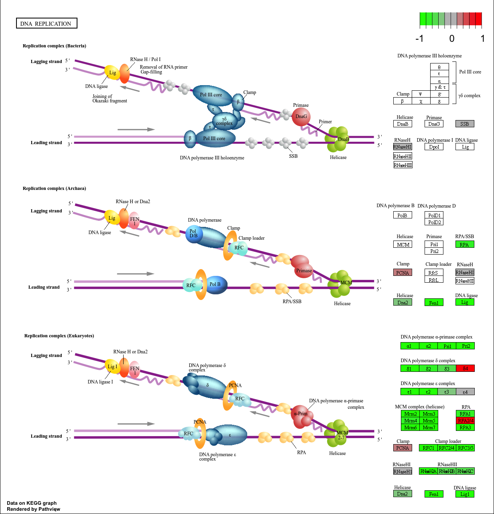

The data for for hands-on session comes from GEO entry: GSE37704, which is associated with the following publication:
Trapnell C, Hendrickson DG, Sauvageau M, Goff L et al. “Differential analysis of gene regulation at transcript resolution with RNA-seq”. Nat Biotechnol 2013 Jan;31(1):46-53. PMID: 23222703
The authors report on differential analysis of lung fibroblasts in response to loss of the developmental transcription factor HOXA1. Their results and others indicate that HOXA1 is required for lung fibroblast and HeLa cell cycle progression. In particular their analysis show that “loss of HOXA1 results in significant expression level changes in thousands of individual transcripts, along with isoform switching events in key regulators of the cell cycle”. For our session we have used their Sailfish gene-level estimated counts and hence are restricted to protein-coding genes only.
Welcome to Bioconductor
Vignettes contain introductory material; view with
'browseVignettes()'. To cite Bioconductor, see
'citation("Biobase")', and for packages 'citation("pkgname")'.
Attaching package: 'Biobase'
The following object is masked from 'package:MatrixGenerics':
rowMedians
The following objects are masked from 'package:matrixStats':
anyMissing, rowMedians
Warning in DESeqDataSet(se, design = design, ignoreRank): some variables in
design formula are characters, converting to factors
dds =DESeq(dds)
estimating size factors
estimating dispersions
gene-wise dispersion estimates
mean-dispersion relationship
final dispersion estimates
fitting model and testing
Run DESeq
res=results(dds)
Q3. Call the summary() function on your results to get a sense of how many genes are up or down-regulated at the default 0.1 p-value cutoff.
summary(res)
out of 15975 with nonzero total read count
adjusted p-value < 0.1
LFC > 0 (up) : 4349, 27%
LFC < 0 (down) : 4393, 27%
outliers [1] : 0, 0%
low counts [2] : 1221, 7.6%
(mean count < 0)
[1] see 'cooksCutoff' argument of ?results
[2] see 'independentFiltering' argument of ?results
head(res)
log2 fold change (MLE): condition hoxa1 kd vs control sirna
Wald test p-value: condition hoxa1 kd vs control sirna
DataFrame with 6 rows and 6 columns
baseMean log2FoldChange lfcSE stat pvalue
<numeric> <numeric> <numeric> <numeric> <numeric>
ENSG00000186092 0.0000 NA NA NA NA
ENSG00000279928 0.0000 NA NA NA NA
ENSG00000279457 29.9136 0.179257 0.324822 0.551863 0.58104205
ENSG00000278566 0.0000 NA NA NA NA
ENSG00000273547 0.0000 NA NA NA NA
ENSG00000187634 183.2296 0.426457 0.140266 3.040350 0.00236304
padj
<numeric>
ENSG00000186092 NA
ENSG00000279928 NA
ENSG00000279457 0.68707978
ENSG00000278566 NA
ENSG00000273547 NA
ENSG00000187634 0.00516278
Volcano plot of results
plot( res$log2FoldChange, -log(res$padj) )
Q4. Improve this plot by adding color and axis labels.
'select()' returned 1:many mapping between keys and columns
head(res, 10)
log2 fold change (MLE): condition hoxa1 kd vs control sirna
Wald test p-value: condition hoxa1 kd vs control sirna
DataFrame with 10 rows and 9 columns
baseMean log2FoldChange lfcSE stat pvalue
<numeric> <numeric> <numeric> <numeric> <numeric>
ENSG00000186092 0.0000 NA NA NA NA
ENSG00000279928 0.0000 NA NA NA NA
ENSG00000279457 29.9136 0.1792571 0.3248216 0.551863 5.81042e-01
ENSG00000278566 0.0000 NA NA NA NA
ENSG00000273547 0.0000 NA NA NA NA
ENSG00000187634 183.2296 0.4264571 0.1402658 3.040350 2.36304e-03
ENSG00000188976 1651.1881 -0.6927205 0.0548465 -12.630158 1.43989e-36
ENSG00000187961 209.6379 0.7297556 0.1318599 5.534326 3.12428e-08
ENSG00000187583 47.2551 0.0405765 0.2718928 0.149237 8.81366e-01
ENSG00000187642 11.9798 0.5428105 0.5215599 1.040744 2.97994e-01
padj symbol genename entrez
<numeric> <character> <character> <character>
ENSG00000186092 NA OR4F5 olfactory receptor f.. 79501
ENSG00000279928 NA NA NA NA
ENSG00000279457 6.87080e-01 NA NA NA
ENSG00000278566 NA NA NA NA
ENSG00000273547 NA NA NA NA
ENSG00000187634 5.16278e-03 SAMD11 sterile alpha motif .. 148398
ENSG00000188976 1.76740e-35 NOC2L NOC2 like nucleolar .. 26155
ENSG00000187961 1.13536e-07 KLHL17 kelch like family me.. 339451
ENSG00000187583 9.18988e-01 PLEKHN1 pleckstrin homology .. 84069
ENSG00000187642 4.03817e-01 PERM1 PPARGC1 and ESRR ind.. 84808
Q7. Finally for this section let’s reorder these results by adjusted p-value and save them to a CSV file in your current project directory.
res = res[order(res$pvalue),]write.csv(res, file="deseq_results.csv")
Pathway Analysis
library(pathview)
##############################################################################
Pathview is an open source software package distributed under GNU General
Public License version 3 (GPLv3). Details of GPLv3 is available at
http://www.gnu.org/licenses/gpl-3.0.html. Particullary, users are required to
formally cite the original Pathview paper (not just mention it) in publications
or products. For details, do citation("pathview") within R.
The pathview downloads and uses KEGG data. Non-academic uses may require a KEGG
license agreement (details at http://www.kegg.jp/kegg/legal.html).
##############################################################################
library(gage)
library(gageData)data(kegg.sets.hs)data(sigmet.idx.hs)# Focus on signaling and metabolic pathways onlykegg.sets.hs = kegg.sets.hs[sigmet.idx.hs]# Examine the first 3 pathwayshead(kegg.sets.hs, 3)
'select()' returned 1:1 mapping between keys and columns
Info: Working in directory /Users/jessica/Documents/BIMM143/bimm143_github/Lab14-Thu2.20
Info: Writing image file hsa04110.pathview.png
You can play with the other input arguments to pathview() to change the display in various ways including generating a PDF graph. For example:
# A different PDF based output of the same datapathview(gene.data=foldchanges, pathway.id="hsa04110", kegg.native=FALSE)
'select()' returned 1:1 mapping between keys and columns
Warning: reconcile groups sharing member nodes!
[,1] [,2]
[1,] "9" "300"
[2,] "9" "306"
Info: Working in directory /Users/jessica/Documents/BIMM143/bimm143_github/Lab14-Thu2.20
Info: Writing image file hsa04110.pathview.pdf
Now, let’s process our results a bit more to automagicaly pull out the top 5 upregulated pathways, then further process that just to get the pathway IDs needed by the pathview() function. We’ll use these KEGG pathway IDs for pathview plotting below.
## Focus on top 5 upregulated pathways here for demo purposes onlykeggrespathways <-rownames(keggres$greater)[1:5]# Extract the 8 character long IDs part of each stringkeggresids =substr(keggrespathways, start=1, stop=8)keggresids
'select()' returned 1:1 mapping between keys and columns
Info: Working in directory /Users/jessica/Documents/BIMM143/bimm143_github/Lab14-Thu2.20
Info: Writing image file hsa04110.pathview.png
'select()' returned 1:1 mapping between keys and columns
Info: Working in directory /Users/jessica/Documents/BIMM143/bimm143_github/Lab14-Thu2.20
Info: Writing image file hsa03030.pathview.png
'select()' returned 1:1 mapping between keys and columns
Info: Working in directory /Users/jessica/Documents/BIMM143/bimm143_github/Lab14-Thu2.20
Info: Writing image file hsa03013.pathview.png
'select()' returned 1:1 mapping between keys and columns
Info: Working in directory /Users/jessica/Documents/BIMM143/bimm143_github/Lab14-Thu2.20
Info: Writing image file hsa04114.pathview.png
'select()' returned 1:1 mapping between keys and columns
Info: Working in directory /Users/jessica/Documents/BIMM143/bimm143_github/Lab14-Thu2.20
Info: Writing image file hsa03440.pathview.png

Gene Ontology (GO)
We can also do a similar procedure with gene ontology. Similar to above, go.sets.hs has all GO terms. go.subs.hs is a named list containing indexes for the BP, CC, and MF ontologies. Let’s focus on BP (a.k.a Biological Process) here.
data(go.sets.hs)data(go.subs.hs)# Focus on Biological Process subset of GOgobpsets = go.sets.hs[go.subs.hs$BP]gobpres =gage(foldchanges, gsets=gobpsets, same.dir=TRUE)lapply(gobpres, head)
Q9 and 10. What pathway has the most significant “Entities p-value”? Do the most significant pathways listed match your previous KEGG results? What factors could cause differences between the two methods?
The most significant pathway is Cell Cycle, Mitotic with an “Entities p-value” of 1.69e-4. Yes, the most significant pathways listed using the website do match the previous KEGG results since the top result for the KEGG results was also the cell cycle, but there is a different p-value of 7.08e-6. The difference in the two methods is that gene ontology is a more standardized compared to KEGG which provides a deeper analysis of gene function and interaction. In other words, KEGG considers how genes interact within complex biological pathways instead of only considering gene function at a basic level like GO.


 > Q8. Can you do the same procedure as above to plot the pathview figures for the top 5 down-reguled pathways?
> Q8. Can you do the same procedure as above to plot the pathview figures for the top 5 down-reguled pathways?